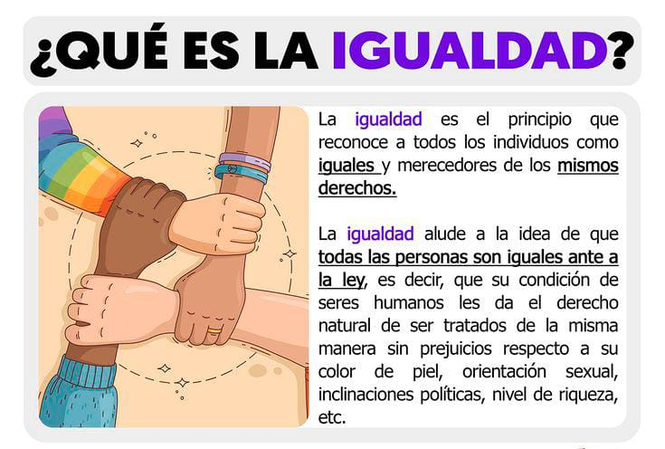

La Igualdad como Pilar de Convivencia
La igualdad de género no es solo un derecho humano, sino la base para una convivencia armónica. Promoverla significa reconocer la dignidad de todas las personas y erradicar prejuicios que generan violencia y exclusión.
Principios para una Cultura de Paz
- Tolerancia: Valorar la diversidad como fortaleza social.
- Solidaridad: Apoyar a quienes enfrentan desigualdad o discriminación.
- Justicia: Garantizar condiciones equitativas para todas las personas.
Iniciativa Gráfica: “Iguales en Dignidad”
La equidad florece donde hay respeto y comprensión.
¿Cómo Puedes Contribuir?
- Participa en talleres sobre igualdad y derechos humanos.
- Cuestiona estereotipos y roles de género tradicionales.
- Fomenta el diálogo respetuoso en tu entorno.
- Comparte información que promueva la equidad.
- Apoya a quienes sufren discriminación o violencia.
Recursos de Apoyo
Si tú o alguien que conoces necesita ayuda, puedes acudir a:
- TelMujer: 800 911 2525
- Centro de Justicia para las Mujeres: Consulta el más cercano en tu estado
- Orientación Escolar: Psicología o trabajo social en tu institución